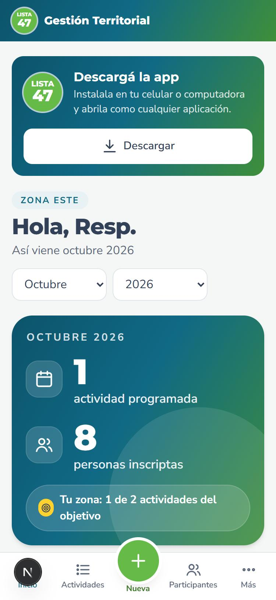
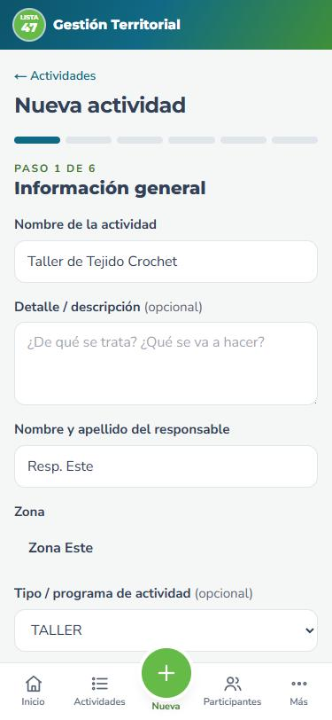
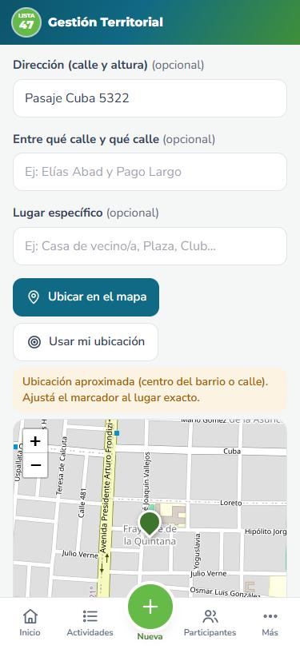
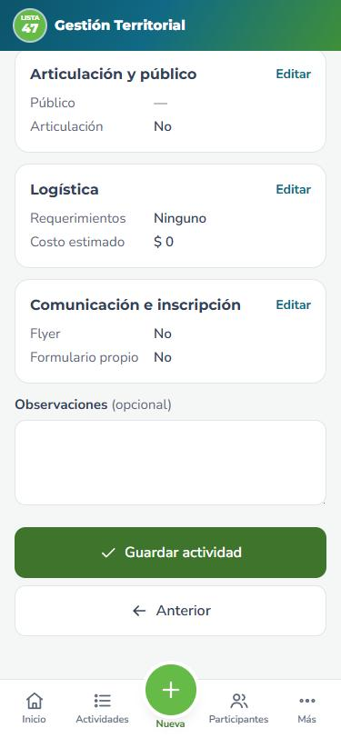

Seis pasos, desde el celular o la computadora. Lleva menos de cinco minutos.
Semana de carga de actividades
Tocá «+ Nueva»El botón verde de abajo, en el centro.

Completá los datosNombre, responsable, zona y tipo.

Ubicala en el mapaY mové el marcador al lugar exacto.

Revisá y guardáTocá «Guardar actividad».
Un nombre claro (ej. «Taller de Tejido Crochet»), responsable, zona y tipo. Si tenés una sola zona, ya viene puesta.
Fecha, horario, barrio y dirección. Tocá «Ubicar en el mapa». ¿Varias clases? «+ Agregar otra clase».
A quién está dirigida y si se trabaja con otra mesa o institución.
Gazebos, mesas, sillas, luz, sonido y otros insumos. Logística ve el pedido y lo prepara.
¿Necesita flyer? Le llega a Diseño. ¿Formulario de inscripción? Se crea un link para compartir (cupo opcional).
Revisá el resumen y tocá «Guardar actividad». Después se puede editar desde la ficha.